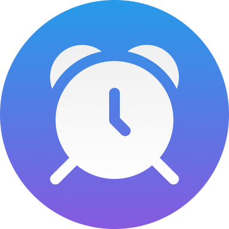

At our club, The Bees, we provide a warm welcome to our members, and guests. You might be wondering how a regular meeting runs. Without hesitation, the answer is with you now. In a regular meeting, we have many role players. So such; Toastmaster of the Day (MC), General Evaluator, Jok Master, Table Topic master (A session where we have impromptu speeches), Prepared speeches (Where the club members or other Toastmasters International club members can deliver a prepared speech as guest speakers according to their chosen path), Evaluation session (This session role is to provide feedback to each segment that is why this session has a Grammarian, an Ah-counter, a Timer and an evaluator for each impromptu speech and prepared one). As you know the tagline of this community is Where Leaders are made. Have you been looking for a place to sharpen and showcase your public speaking and communication skills? What are you for to join us?

Thank you for reading about how our regular works.
These are some pieces of information about our club regular meetings, The Bees.